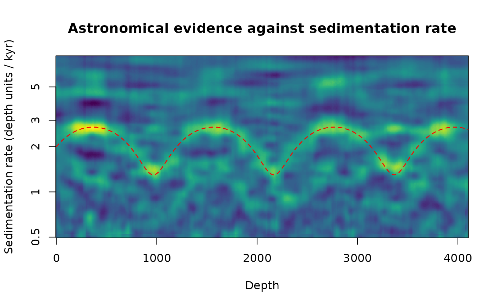

Map of the astronomical evidence against sedimentation rate and depth
Source:R/track_hmm.R
plot_astro_evidence.RdShows what track_astro_hmm tracks: for every sedimentation rate of a (wide) range and every position,
the weighted sum of the log evidence of all astronomical cycles at the depth periods they would have at that rate.
Where the record carries the cycles, the map shows a ridge at the true rate, and changes of the rate (a ramp, a
jump, an oscillation) are visible as the shape of that ridge, with the aliases (rates at which other cycles fall on
the ridges) as weaker parallel bands. The map is the tool to look at before choosing sedrate for the
tracking: on CIP Case 3 (sedimentation rate oscillating between 3 and 6 cm/kyr with a 1.2-Myr period, very red
noise) the posterior map of a Morlet scalogram with omega_nr = 16 over a rate range of 1-20 cm/kyr shows a
ridge varying between 3 and 6 cm/kyr, without assuming anything about the form of the variation, whereas the
synchrosqueezed maps show speckle and long horizontal streaks (the slow wander of the red noise reassigned to a few
periods) with a bias towards the edges of the range.
Arguments
- wavelet
Scalogram from which the evidence is computed (list of class
analyze.wavelet;analyse_waveletwith a highomega_nrworks best for noisy records,analyse_superlet_sst,analyse_chirplet_sstetc. for clean ones).NULLshows the evidence stored intrackinstead.Default=NULL.- sedrate
Range of the sedimentation rate to show (numeric vector
c(lower, upper), > 0, in depth units per kyr);NULLuses a wide range from the period range of the scalogram and the astronomical periods. Not used when the map is taken fromtrack.Default=NULL.- track
Optional track to draw on the map (white line) and the source of the map for
type = "posterior": the output oftrack_astro_hmmortrack_astro_auto(its elementtrackis used).Default=NULL.- reference
Optional sedimentation rate curve to draw as a red dashed line (two-column data frame or matrix: depth, sedimentation rate in depth units per kyr), e.g. a known or published rate.
Default=NULL.- rate_unit
Conversion factor and label of the rate axis (vector of length 2: the factor by which the rates are multiplied for the axis labels, and the unit text), e.g.
c(100, "cm/kyr")for a record in metres.Default=c(1, "depth units / kyr").- palette
Name of a
hcl.colorspalette for the colour scale, a character string, for example"viridis","Plasma","Inferno","YlOrRd","Spectral","Blue-Red","Zissou 1"; rungrDevices::hcl.pals()to list all 115 names. Low values get the first colour of the palette. Names of the viridis family ("viridis","magma","inferno","plasma","cividis","rocket","mako","turbo") give the colours of the viridis package, as in the wavelet plots.Default="viridis".- main
Title of the plot (character);
NULLgives a title that describes the map shown.Default=NULL.- type
What is shown (character, one of
"evidence","posterior"):"evidence"the weighted log evidence of all cycles (computed fromwavelet, or the one stored intrackwhenwaveletisNULL);"posterior"the posterior of the sedimentation rate oftrack(the attributeposteriorof atrack_astro_hmmresult; its square root is shown). The posterior combines the evidence with the continuity of the rate and is the cleaner picture of a weak ridge.Default="evidence".- ...
Arguments passed to
track_astro_hmmthat shape the evidence (astro_periods,weights,age_ma,k_yr,smooth_depth,normalise,consistent_cycles, ...); only used when the evidence is computed fromwavelet.
Examples
# \donttest{
set.seed(1)
t <- seq(0, 2000, by = 0.5)
x_t <- sin(2 * pi * t / 23.7) + 0.6 * sin(2 * pi * t / 19) + 0.8 * sin(2 * pi * t / 41)
sr <- 2 + 0.7 * sin(2 * pi * t / 600) # oscillating sedimentation rate
zt <- c(0, cumsum(sr[-1] * diff(t)))
z <- seq(0, max(zt), by = 1)
x <- approx(zt, x_t, z)$y + rnorm(length(z), sd = 1.5)
w <- analyse_wavelet(data.frame(z, x), lowerPeriod = 10, upperPeriod = 500, dj = 1 / 50,
omega_nr = 12)
plot_astro_evidence(w, sedrate = c(0.5, 8), reference = data.frame(z, approx(zt, sr, z)$y))
#> track_astro_hmm: cycles used for changes of the rate only (not resolved over the whole sedimentation-rate range): 125, 95, 19
#> track_astro_hmm: cycles not used: 405

# }